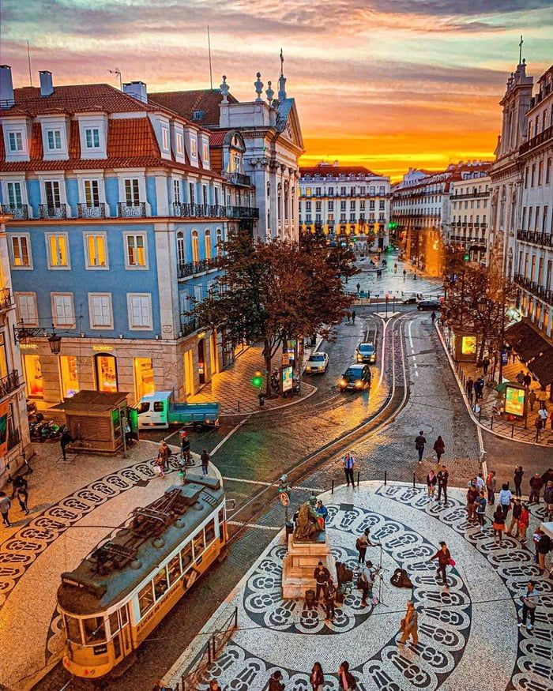
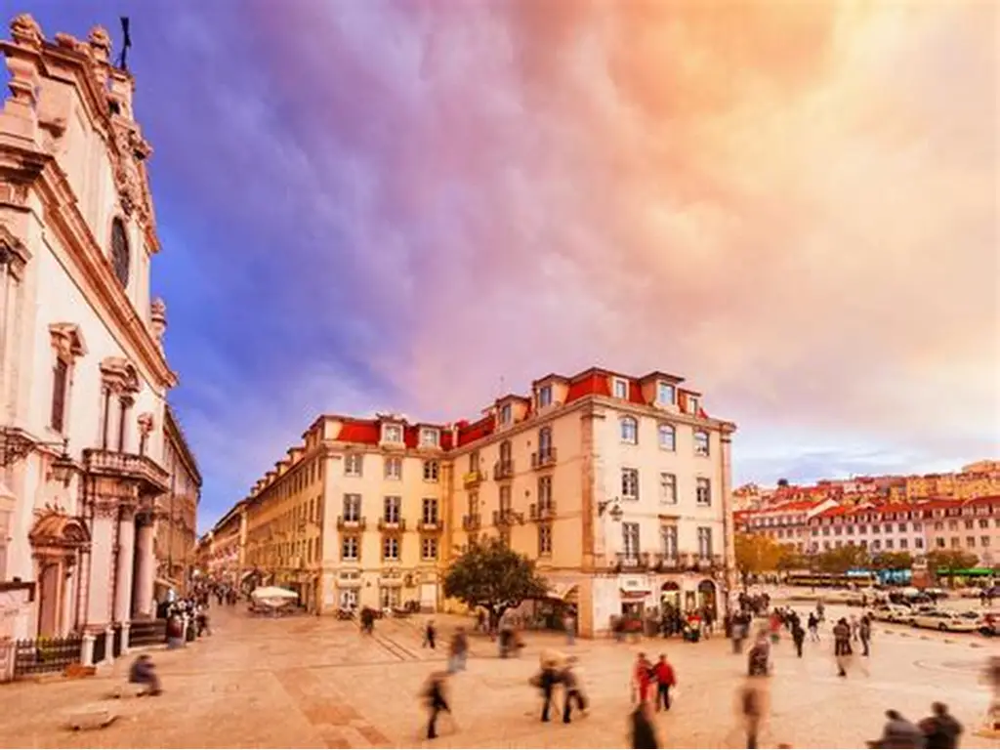
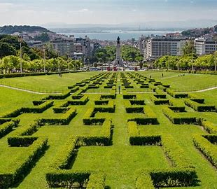
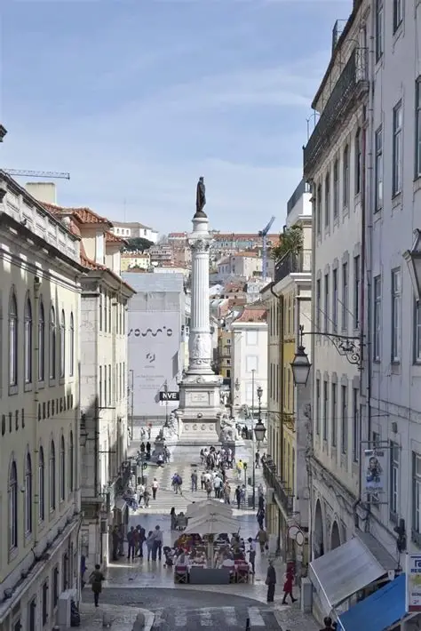
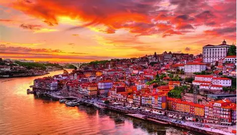
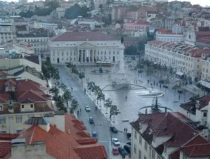
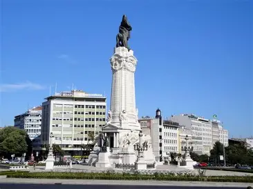
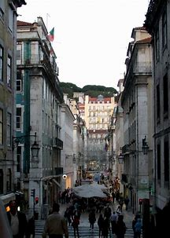

Multimédia
Home
Local
Multimédia
Info
Fotografias
Alguns registos visuais de Lisboa usando apenas as imagens do projeto.

Elétrico clássico

Ponte 25 de Abril

Vista aérea

Bairro típico

Belém
Praça do Comércio

Azulejos

Miradouro

Noite em Lisboa